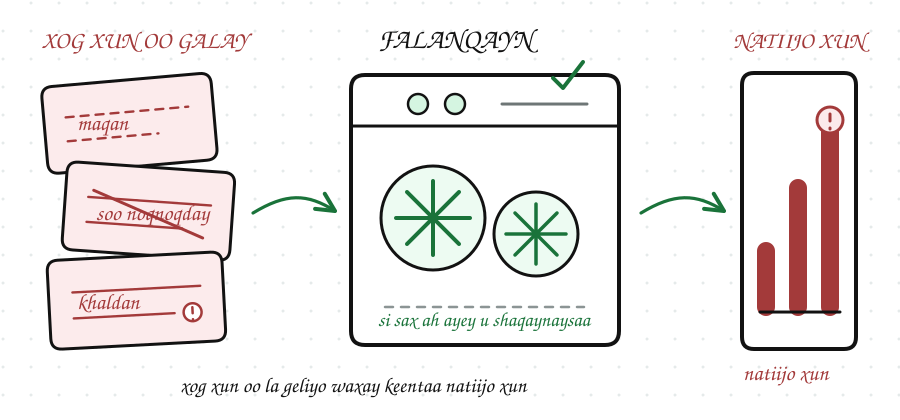
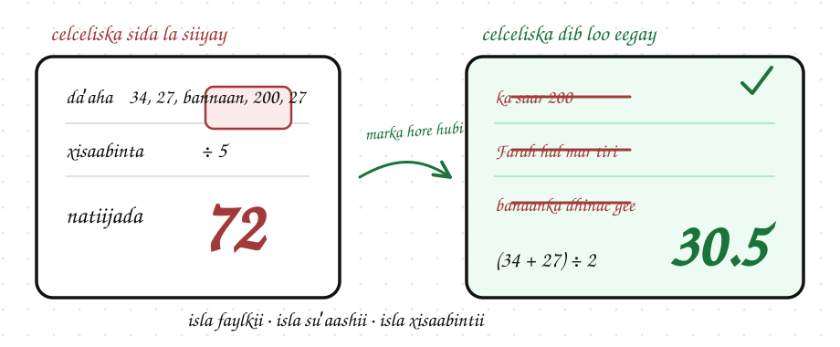

Tayada Xogta
Waxaad awoodi doontaa inaad jadwal (table) eegto oo aad aqoonsato dhibaatooyinka ku jira xogta.
Dulmar
Maamule ayaa kuu soo diray liiska macaamiisha, wuxuuna kaa codsaday inaad xisaabiso celceliska daʼdooda. Markaad jadwalka eegto, waxaad markiiba arkaysaa dhowr sababood oo natiijada ka dhigi kara mid khaldan.
Xog xun waxay keentaa goʼaanno xun. Xitaa falanqayn (analysis) fudud way khaldami kartaa haddii xogtu ay dhammaystirnayn, khaldan tahay, ama aanay isku mid ahayn.
Maxay Tayada Xogtu Muhiim u Tahay?
Tayada xogta (data quality) waxay kuu sheegaysaa in dataset-ku ku habboon yahay shaqada laga rabo iyo in kale. Goʼaan lagu dhisay tirooyin maqan, xog soo noqnoqotay, ama si khaldan loo qoray wuxuu u muuqan karaa mid sax ah, laakiin natiijadiisu way khaldan tahay.
Taasi waa sababta xirfadlayaasha xogta (data professionals) ay u hubiyaan xogta ka hor falanqaynta.

Dhibaatooyinka Caamka ah ee Tayada Xogta
Khaladaadka inta badan laga helo xogta waxaa ka mid ah:
Waxaa caam ah in dataset laga helo hal ama dhowr ka mid ah dhibaatooyinkan.
Cabbirrada Tayada Xogta
Uma baahnid qalab horumarsan (advanced tools) si aad u bilowdo hubinta tayada xogta. Mararka qaarkood jadwal si taxaddar leh loo eego ayaa muujinaya qiimeyaal maqan, ama safaf soo noqnoqda (duplicate rows).
Tusaale: Liiska Macaamiisha
Maamuluhu wuxuu rabaa celceliska daʼda macaamiisha. Marka hore jadwalka eeg. Waxaa ku jira afar dhibaato.
Isla Xogtii, Celcelisyo Kala Duwan
Saddex ka mid ah afarta dhibaato ayaa beddelaya celceliska daʼda, mid kastaana si gaar ah ayuu u beddelaa:
Daʼda Liibaan waa 200. Waa qiime khaldan (incorrect value), sababtoo ah waa tiro aan macquul ahayn oo celceliska kor u qaadaysa.
Daʼda Sagal way bannaan tahay. Waa qiime maqan (missing value), taas oo xogta ka dhigaysa mid aan dhammaystirnayn. Waa inaad goʼaansataa in Sagal laga reebo celceliska ama daʼdeeda eber loo tiriyo.
C-102 laba jeer ayuu soo muuqday. Waa xog soo noqnoqotay (duplicate). Labada saf xogtoodu waa sax, laakiin Farah waxaa loo tirinayaa laba macmiil.
Isla Xogtii, Celcelisyo Kala Duwan
Haddii daʼaha jadwalka sida ay yihiin loo xisaabiyo, meesha bannaanna aan tiro ahaan loo tirin, celcelisku wuxuu noqonayaa 72. Marka qiimaha 200 laga saaro, Farah hal mar la tiriyo, meesha bannaan ee Sagalna aan lagu darin xisaabinta, celcelisku wuxuu noqonayaa 30.5.

Dhibaatada afraad celceliska ma beddelayso. Hargeisa iyo hargeisa waa habayn aan isku mid ahayn (inconsistent formatting). Waxay muhiim noqon lahayd haddii suʼaashu magaalooyinka ku saabsan tahay. Dhibaatada muhiimka ahi waxay ku xiran tahay suʼaasha aad rabto inaad ka jawaabto.